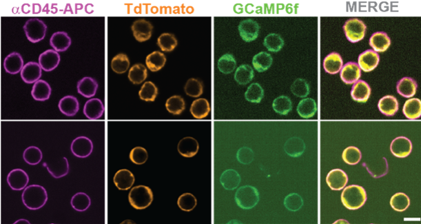
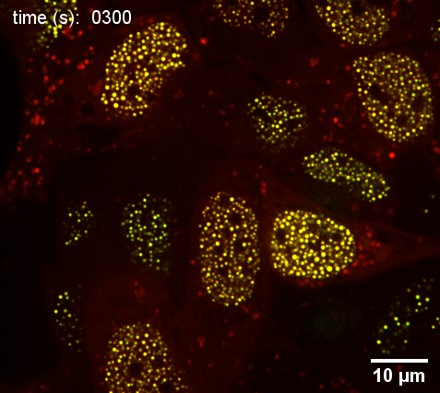

Drop an image atimages/research-crowding.pngMurine thymocytes expressing the SaLSa cell-surface-crowding reporter, surface-stained with an anti-CD45 antibody.
The glycocalyx and cell-surface proteome create a physical barrier that resists membrane-membrane apposition. I study how the cell can tune surface crowding (or how we might modify it) to control cell-cell fusion, immune synapse formation, and T cell and NK cell function.

Drop an image atimages/research-phase-separation.jpgOptogenetically nucleated Corelet condensates in the nucleus, used to probe chromatin mechanics and condensate coarsening dynamics (Nature Physics, 2021).
Biomolecular condensates formed by liquid-liquid phase separation organize the genome and regulate gene expression. My doctoral work used statistical physics and quantitative live-cell imaging to explain how chromatin mechanics and condensate coalescence/nucleation set the size, dynamics, and function of nuclear condensates.